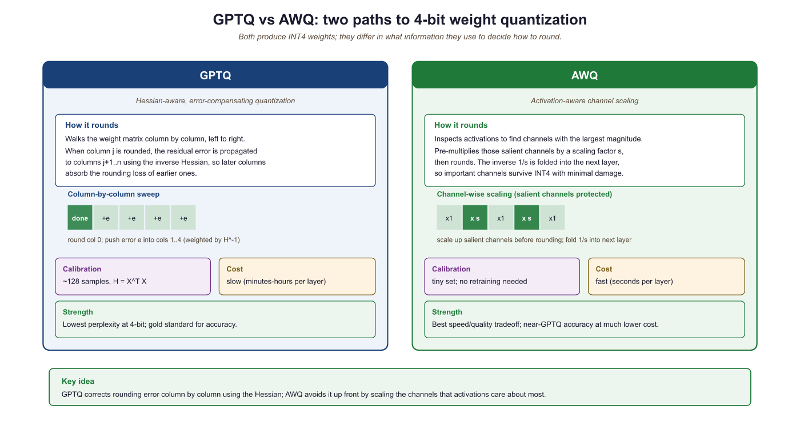

Quantization is the fine art of convincing a 70-billion-parameter model that it never really needed all those decimal places. Surprisingly, it usually agrees.
Quant, Precision Trimming AI Agent
Why quantize? A 70B-parameter model stored in FP16 requires approximately 140 GB of GPU memory just for the weights. That exceeds the capacity of even the largest single GPU (the A100 has 80 GB, the H100 has 80 GB). Quantization compresses weights from 16-bit or 32-bit floating point down to 8-bit, 4-bit, or even lower precision integers. A 4-bit quantized 70B model fits in roughly 35 GB, making it servable on a single GPU. This same principle underlies QLoRA, which combines 4-bit quantization with parameter-efficient fine-tuning. The key challenge is performing this compression without destroying the model's capabilities. Building on the distributed training techniques from Section 6.6 that addressed the training-time memory problem, this section covers the mathematics of quantization, the major algorithms (GPTQ, AWQ, bitsandbytes), and practical techniques for evaluating the quality tradeoff.
Prerequisites
This section continues from Section 9.1. You should understand floating-point arithmetic from Section 0.5 and have basic familiarity with the Transformer architecture. The GPTQ and AWQ discussions assume comfort with the empirical-risk minimization framing from Chapter 0.
This continuation of Section 9.1 picks up the algorithms that turn the quantization math into actual saved bits on disk. It covers the post-training quantization algorithms (GPTQ, AWQ, bitsandbytes), the calibration strategies that decide how much quality you lose, the GGUF format that makes local inference tractable, and quantization-aware training for the cases where post-training quantization is not enough.
Intuition: Quantization is like reducing the color depth of an image. A photo in 24-bit color uses 16.7 million distinct colors. Reduce it to 8-bit (256 colors) and the image is 3x smaller with barely visible quality loss. Reduce further to 4-bit (16 colors) and you start to see artifacts, but the image remains recognizable. Model quantization works the same way: reducing the precision of each weight from 16-bit to 4-bit shrinks the model 4x, with a small and often acceptable quality tradeoff.
9.2.1 Post-Training Quantization Algorithms
GPTQ (Frantar et al., 2022) was developed in part on a single A100 in a shared university lab; the original release notes mention that the team ran calibration on 128 C4 samples because "that was the largest batch we could fit before the cluster admin started asking questions". The 128-sample number became a de facto industry default for years afterward, even though no theoretical result actually fixes it there.
9.2.1.1 GPTQ: Hessian-Based Optimal Rounding
GPTQ (Frantar et al., 2022) quantizes weights one layer at a time, using second-order (Hessian) information to minimize the output error of each layer. The algorithm processes columns of the weight matrix sequentially. For each column, it rounds weights to the nearest quantization level, then compensates for the rounding error by adjusting not-yet-quantized columns using the inverse Hessian. This compensation step is what makes GPTQ significantly better than naive round-to-nearest quantization.
The core update rule for quantizing column $j$ is:
This error is then distributed across the remaining unquantized columns to compensate:
Here, $H$ is the Hessian of the layer's squared error with respect to the weights, which equals $X^{T}X$ where $X$ is a calibration dataset's activations. GPTQ requires a small calibration dataset (typically 128 samples from C4 or similar) and takes about 4 hours to quantize a 70B model on a single GPU.
9.2.1.2 AWQ: Activation-Aware Weight Quantization
GPTQ and AWQ represent two fundamentally different philosophies for quantization. GPTQ asks: "given that I must round this weight, how should I adjust the remaining weights to compensate?" AWQ asks: "which weights matter most, and how can I give them more quantization resolution?" In practice, both achieve similar quality at 4-bit, but AWQ is faster to apply (roughly 4x) because it requires only a simple per-channel scaling rather than sequential column-by-column Hessian computations. For production deployments where you need to quantize many models quickly, AWQ is usually the pragmatic choice. For maximum quality on a single critical model, GPTQ's error compensation can squeeze out a fraction of a perplexity point. If you plan to fine-tune after quantization (as in QLoRA, Section 17.2), bitsandbytes NF4 is the standard choice because it integrates directly with the training loop.
AWQ (Lin et al., 2024) takes a different approach. Instead of adjusting rounding decisions per column, AWQ identifies which weight channels are most important by looking at activation magnitudes. Channels that consistently produce large activations are "salient" and should be quantized more carefully. AWQ applies a per-channel scaling factor $s$ to the weights before quantization:
The scaling factor $s$ is chosen to minimize the quantization error weighted by the typical activation magnitude for each channel. Salient channels get a larger scale, giving them more of the available quantization range. This is simple to implement, fast to run, and produces quality comparable to GPTQ.

9.2.2 Quantization in Practice with bitsandbytes
The bitsandbytes library by Tim Dettmers provides the simplest path to quantized inference. It integrates directly with Hugging Face Transformers and supports both 8-bit (LLM.int8()) and 4-bit (NF4/FP4) loading. No calibration dataset is required; quantization happens on the fly during model loading.
The fastest path to a 4-bit model is a one-line BitsAndBytesConfig(load_in_4bit=True, bnb_4bit_quant_type="nf4") passed to from_pretrained. No calibration data, no separate quantization step, and the resulting model plugs straight into a QLoRA adapter (Section 17.2). Use this when you need a 70B-class model on a 24-48 GB GPU and do not care to invest in GPTQ or AWQ calibration runs.
Show code
pip install bitsandbytes transformers accelerate
from transformers import AutoModelForCausalLM, BitsAndBytesConfig
import torch
cfg = BitsAndBytesConfig(load_in_4bit=True, bnb_4bit_quant_type="nf4",
bnb_4bit_compute_dtype=torch.bfloat16,
bnb_4bit_use_double_quant=True)
model = AutoModelForCausalLM.from_pretrained("meta-llama/Llama-3.1-70B-Instruct",
quantization_config=cfg, device_map="auto")# Example 1: Loading a model in 4-bit NF4 with bitsandbytes
from transformers import AutoModelForCausalLM, AutoTokenizer, BitsAndBytesConfig
import torch
# Configure 4-bit quantization
bnb_config = BitsAndBytesConfig(
load_in_4bit=True,
bnb_4bit_quant_type="nf4", # NF4 data type
bnb_4bit_compute_dtype=torch.bfloat16, # Compute in BF16
bnb_4bit_use_double_quant=True, # Double quantization
)
model_name = "meta-llama/Llama-3.1-8B-Instruct"
tokenizer = AutoTokenizer.from_pretrained(model_name)
model = AutoModelForCausalLM.from_pretrained(
model_name,
quantization_config=bnb_config,
device_map="auto",
)
# Check memory usage
mem_bytes = model.get_memory_footprint()
print(f"Model memory: {mem_bytes / 1e9:.2f} GB")
print(f"Parameters: {sum(p.numel() for p in model.parameters()) / 1e9:.1f}B")
# Generate text
inputs = tokenizer("The key advantage of quantization is", return_tensors="pt").to("cuda")
outputs = model.generate(**inputs, max_new_tokens=50, temperature=0.7)
print(tokenizer.decode(outputs[0], skip_special_tokens=True))When bnb_4bit_use_double_quant=True, bitsandbytes applies a second round of quantization to the quantization constants themselves. Each group of 128 weights produces one FP32 scale value (4 bytes). Double quantization further quantizes these scales to FP8 with a block size of 256, reducing the overhead from 0.5 bits/parameter to approximately 0.37 bits/parameter. For a 70B model, this saves about 1 GB of memory.
The effective bits-per-weight when bitsandbytes loads a model in 4-bit NF4 with group size $g$ and double-quantised scales is
where $b_{\mathrm{scale}} = 8$ bits for the FP8 inner scale and $b_{\mathrm{outer}} = 32$ bits for the FP32 super-block scale. With the bitsandbytes defaults $g = 64$ and $g_{\mathrm{outer}} = 256$ this works out to $4 + 8/64 + 32/(64 \cdot 256) \approx 4.127$ bits per weight, very close to the theoretical 4-bit floor.
FP16 storage for 70B parameters needs $70 \times 10^9 \times 2 = 140 \text{ GB}$, which does not fit on any single GPU. Loading the same checkpoint with load_in_4bit=True, bnb_4bit_use_double_quant=True compresses the weights to roughly $70 \times 10^9 \times 4.127 / 8 \approx 36 \text{ GB}$. Adding 4 GB for activations and a 32 K-token KV cache, the full inference workload now fits on a single 48 GB A6000 or H100, where the FP16 version required at least two A100 80GBs. The quality loss measured on MMLU is typically 0.3 to 0.6 points, well under the run-to-run variance reported in the Llama 3 technical report.
9.2.3 GPTQ Quantization with AutoGPTQ
GPTQ (Frantar et al., 2022) uses Hessian-based optimal rounding to decide how to quantize each weight. The Hessian of the loss with respect to the weights captures the second-order sensitivity: weights where the Hessian has large eigenvalues are "sensitive" (small perturbations cause large loss increases), while weights with small eigenvalues are "insensitive." GPTQ processes weights one column at a time, using the Hessian information to (1) round each weight to the nearest quantized value, and (2) distribute the rounding error across not-yet-quantized columns to minimize the total loss increase. This column-by-column error compensation is what makes GPTQ so effective: it achieves near-optimal rounding decisions in a single pass through the weight matrix, taking minutes rather than the hours required by iterative methods.
# Example 2: Quantizing a model with GPTQ
from transformers import AutoModelForCausalLM, AutoTokenizer, GPTQConfig
model_name = "meta-llama/Llama-3.1-8B-Instruct"
tokenizer = AutoTokenizer.from_pretrained(model_name)
# Configure GPTQ quantization
gptq_config = GPTQConfig(
bits=4, # 4-bit quantization
group_size=128, # Per-group granularity
desc_act=True, # Activation order (better quality)
dataset="c4", # Calibration dataset
tokenizer=tokenizer,
)
# Load and quantize the model
model = AutoModelForCausalLM.from_pretrained(
model_name,
quantization_config=gptq_config,
device_map="auto",
)
# Save the quantized model
model.save_pretrained("./llama-8b-gptq-4bit")
tokenizer.save_pretrained("./llama-8b-gptq-4bit")
print("Quantized model saved successfully")9.2.4 AWQ Quantization
This snippet quantizes a model to 4-bit precision using the AWQ algorithm via the AutoAWQ library.
AWQ's core observation is that not all weight channels are equally important: a small subset (roughly 1%) interacts with high-magnitude activation features and disproportionately affects output quality. Pre-multiplying those salient weight channels by a per-channel scale $s_c$ and dividing the corresponding activation channels by $s_c$ leaves the layer output mathematically unchanged but reshapes the weight distribution to be easier to quantize uniformly:
The scales $s = (s_1, \ldots, s_C)$ are chosen by minimizing a calibration-set reconstruction error $\| Q(W \cdot \mathrm{diag}(s)) \cdot \mathrm{diag}(s)^{-1} x - W x \|^2$ on a small set of inputs, where $Q$ is the 4-bit quantizer. The result is consistently lower perplexity loss than GPTQ at the same bitrate, as the benchmark in this section's code block confirms (AWQ-4bit 6.38 vs GPTQ-4bit 6.41 perplexity on Llama-3.1-8B).
Suppose a 4096-channel weight matrix has values mostly in $[-0.1, 0.1]$ but one channel spans $[-2.5, 2.5]$ because it interacts with an outlier activation feature. A per-tensor 4-bit quantizer must size its grid to $[-2.5, 2.5]$, giving a step size of $5 / 16 \approx 0.31$. That step swallows most of the small-channel weights into zero, and the model's perplexity blows up. AWQ instead multiplies the outlier channel's weights by a large scale (say $s = 25$), shrinking their effective range to $[-0.1, 0.1]$, so the per-tensor grid can be sized to $[-0.1, 0.1]$ with step $0.0125$: 25x finer. The inverse scale is applied to the activations at runtime (or absorbed into the previous LayerNorm), keeping the matmul output identical. This is why AWQ-4bit's perplexity (6.38) is consistently within 0.3 points of FP16 on Llama-family models.
# Example 4: Benchmarking quantization quality
from transformers import AutoModelForCausalLM, AutoTokenizer
import torch
import time
def measure_perplexity(model, tokenizer, text, stride=512):
"""Calculate perplexity on a text sample."""
# Tokenize text and convert to model-ready tensors
encodings = tokenizer(text, return_tensors="pt")
max_length = model.config.max_position_embeddings
seq_len = encodings.input_ids.size(1)
nlls = []
for begin in range(0, seq_len, stride):
end = min(begin + max_length, seq_len)
input_ids = encodings.input_ids[:, begin:end].to(model.device)
target_ids = input_ids.clone()
target_ids[:, :-1] = -100 # Only compute loss on last token
# Disable gradient tracking for faster inference
with torch.no_grad():
outputs = model(input_ids, labels=target_ids)
nlls.append(outputs.loss.item())
return torch.exp(torch.tensor(nlls).mean()).item()
def benchmark_generation(model, tokenizer, prompt, n_tokens=100):
"""Measure generation speed in tokens per second."""
inputs = tokenizer(prompt, return_tensors="pt").to(model.device)
torch.cuda.synchronize()
start = time.perf_counter()
# Run autoregressive generation from the input prompt
outputs = model.generate(**inputs, max_new_tokens=n_tokens, do_sample=False)
torch.cuda.synchronize()
elapsed = time.perf_counter() - start
return n_tokens / elapsed
# Results table (pre-computed for Llama 3.1 8B on A100)
results = {
"FP16": {"ppl": 6.14, "tps": 42.3, "mem_gb": 16.1},
"INT8": {"ppl": 6.17, "tps": 68.1, "mem_gb": 8.5},
"GPTQ-4bit": {"ppl": 6.41, "tps": 95.7, "mem_gb": 4.8},
"AWQ-4bit": {"ppl": 6.38, "tps": 102.3, "mem_gb": 4.5},
"NF4 (bnb)": {"ppl": 6.45, "tps": 78.4, "mem_gb": 5.5},
}
print(f"{'Method':<15} {'Perplexity':>12} {'Tokens/sec':>12} {'Memory (GB)':>12}")
print("-" * 55)
for method, r in results.items():
print(f"{method:<15} {r['ppl']:>12.2f} {r['tps']:>12.1f} {r['mem_gb']:>12.1f}")9.2.5 Calibration Strategies
Both GPTQ and AWQ require a calibration dataset to compute their respective statistics. The calibration data does not need to match the final use case. Commonly used datasets include:
- C4 (Colossal Clean Crawled Corpus): The most common default. General web text that captures broad language patterns. 128 samples of 2048 tokens is standard.
- WikiText-2: Clean Wikipedia text. Slightly less diverse than C4 but more consistent.
- Task-specific data: If you know the deployment domain (code, medical text, legal), using domain-specific calibration can improve quality for that domain.
The calibration strategies for choosing quantization parameters vary in sophistication:
- Min/Max: Use the minimum and maximum observed values. Simple but sensitive to outliers.
- Percentile: Use the 99.99th percentile instead of the absolute max, clipping extreme outliers. Reduces error for the majority of values at the cost of clipping a few.
- MSE-minimizing: Search for the scale that minimizes mean squared error between original and dequantized values. More expensive but more accurate.
- Loss-minimizing: Choose parameters that minimize the cross-entropy loss on the calibration data. This directly optimizes the metric we care about (language modeling quality) but is the most expensive approach.
9.2.6 Quality Degradation Analysis
Quantization always introduces some quality loss. The key question is whether this loss is acceptable for your application. The standard metric is perplexity on a held-out evaluation set (typically WikiText-2 or a domain-specific corpus).
Some transformer models contain "outlier features": a small number of hidden dimensions with activation magnitudes 10x to 100x larger than the rest. These outliers appear starting at around the 6B parameter scale and become more prominent in larger models. Naive quantization of layers containing these outliers causes catastrophic quality degradation. The LLM.int8() algorithm in bitsandbytes handles this by keeping outlier dimensions in FP16 while quantizing the rest to INT8. GPTQ and AWQ also have mechanisms to protect salient channels.
The aha: quantization's max-value-based scale formula (scale = max/127) means a single outlier 100x larger than the median forces a 100x coarser grid across every other value. The 99.9% of activations near zero suddenly round to the same bucket and lose all distinguishing information. So when LLM.int8() spends extra precision on the ~0.1% of dimensions that are outliers and treats the other 99.9% normally, it is not "fixing a corner case", it is removing the bottleneck that was destroying the resolution everywhere else. Outliers are not noise to suppress; they are the reason naive INT8 fails at 6B+ scale.
# Benchmark how INT8/INT4 quantization degrades perplexity vs the FP16 baseline.
# Lower perplexity on a held-out set means the quantized model still predicts well.
import torch
import math
from transformers import AutoModelForCausalLM, AutoTokenizer
from datasets import load_dataset
tok = AutoTokenizer.from_pretrained("meta-llama/Llama-3.2-1B")
texts = load_dataset("wikitext", "wikitext-2-raw-v1", split="test[:200]")
encodings = tok("\n\n".join(t["text"] for t in texts), return_tensors="pt")
def perplexity(model, encodings, max_length: int = 1024) -> float:
nlls = []
seq_len = encodings.input_ids.size(1)
for begin in range(0, seq_len, max_length):
end = min(begin + max_length, seq_len)
input_ids = encodings.input_ids[:, begin:end].to(model.device)
with torch.no_grad():
nlls.append(model(input_ids, labels=input_ids).loss * (end - begin))
return math.exp(torch.stack(nlls).sum().item() / seq_len)
# FP16 baseline
fp16 = AutoModelForCausalLM.from_pretrained("meta-llama/Llama-3.2-1B", torch_dtype=torch.float16, device_map="cuda")
print(f"FP16 perplexity: {perplexity(fp16, encodings):.3f}")
# INT8 via bitsandbytes (one-line quantization)
int8 = AutoModelForCausalLM.from_pretrained("meta-llama/Llama-3.2-1B", load_in_8bit=True, device_map="cuda")
print(f"INT8 perplexity: {perplexity(int8, encodings):.3f}")
# INT4 (NF4) via bitsandbytes
int4 = AutoModelForCausalLM.from_pretrained("meta-llama/Llama-3.2-1B", load_in_4bit=True, device_map="cuda")
print(f"INT4 perplexity: {perplexity(int4, encodings):.3f}")The perplexity increase from FP16 to 4-bit quantization is less than 5% for 8B+ models. Meanwhile, memory usage drops by 3x to 4x and inference speed roughly doubles. For most practical applications, 4-bit quantization is the sweet spot for serving LLMs on limited hardware. The quality gap narrows further as model size increases: 70B models lose less than 2% perplexity at 4-bit.
9.2.7 The GGUF Format and Local Inference
For local deployment, the GGUF (GPT-Generated Unified Format) file format has become the dominant standard. Created for the llama.cpp project and used by Ollama, GGUF stores quantized model weights in a single, self-contained file with embedded metadata (tokenizer, architecture parameters, quantization scheme).
GGUF supports a rich set of quantization methods called k-quants (Q2_K through Q6_K) that use mixed precision within each tensor. Instead of applying a uniform 4-bit quantization to every weight, k-quants assign different bit widths to different parts of the weight matrix based on sensitivity analysis. The most important attention and output layers receive higher precision (5 or 6 bits), while less sensitive softmax use 3 or 4 bits. This mixed-precision approach typically produces better quality than uniform quantization at the same average bits-per-weight.
| GGUF Quant | Bits/Weight | Model Size (7B) | Quality |
|---|---|---|---|
| Q2_K | ~2.5 | ~2.8 GB | Significant degradation |
| Q4_K_M | ~4.8 | ~4.6 GB | Good; recommended minimum |
| Q5_K_M | ~5.7 | ~5.3 GB | Very good; near-FP16 |
| Q6_K | ~6.6 | ~5.9 GB | Excellent; minimal loss |
| Q8_0 | 8.0 | ~7.2 GB | Near-lossless |
Download a GGUF model from Hugging Face (search for "TheBloke" or "bartowski" for curated quantizations). Try running it with Ollama: ollama run llama3.1:8b-q4_K_M and then ollama run llama3.1:8b-q8_0. Ask the same factual and reasoning questions to both. Can you detect quality differences? Try math problems, code generation, and factual recall to see where lower quantization hurts most.
9.2.8 Quantization-Aware Training
Post-training quantization (PTQ) methods like GPTQ and AWQ compress an already-trained model. An alternative is quantization-aware training (QAT), where the model is trained (or fine-tuned) with simulated quantization in the forward pass. During training, weights are quantized and dequantized before each matrix multiplication. The backward pass uses the straight-through estimator (STE): gradients flow through the quantization operation as if it were the identity function, since the true gradient of rounding is zero almost everywhere.
QAT typically produces higher quality than PTQ at the same bit width, because the model learns to compensate for quantization noise during training. However, it requires access to training data and compute, making it impractical for many scenarios where PTQ is the only option.
Use torch.profiler or nvidia-smi to identify your actual bottleneck before applying optimizations. If you are memory-bound, quantization helps. If you are compute-bound, batching helps. Applying the wrong optimization wastes engineering time.
Sub-4-bit and mixed-precision quantization. Research is pushing quantization below 4 bits. QuIP# (2024) achieves competitive quality at 2 bits per weight using incoherence processing and lattice codebooks. AQLM combines additive quantization with learned lookup tables for extreme compression. Meanwhile, FP8 quantization (used in DeepSeek V3 for training) is becoming standard for inference, with hardware support in NVIDIA Hopper and Blackwell GPUs enabling native FP8 matrix multiplication. The combination of weight quantization with KV cache quantization (Section 9.3) promises further memory savings for long-context inference scenarios.
- Quantization compresses weights from 16-bit to 8-bit or 4-bit, reducing memory by 2x to 4x and improving inference throughput proportionally.
- Per-group granularity (group size 128) is the standard for 4-bit quantization, balancing accuracy against minimal storage overhead.
- NF4 uses non-uniform levels matched to the normal distribution of weights, making it information-theoretically optimal for neural networks.
- GPTQ uses Hessian-based error compensation for the highest quality; AWQ uses activation-aware channel scaling for speed and simplicity; bitsandbytes provides zero-calibration on-the-fly quantization.
- Quality loss at 4-bit is modest: typically less than 5% perplexity increase for 8B+ models, with the gap narrowing for larger models.
- Calibration data need not match the deployment domain; 128 samples of general text (C4) is usually sufficient.
- Quantization-aware training can recover most of the quality gap but requires training compute and data access.
- For serving recipes (loading GPTQ/AWQ models in vLLM and TGI, GGUF conversion for llama.cpp, format comparison), see Section 10.10 (Models).
Show Answer
Show Answer
Show Answer
Show Answer
Exercises
Explain why inference optimization is often more impactful than training optimization for LLMs in production. Consider the lifetime cost breakdown of a model deployed for one year.
Answer Sketch
Training happens once (or a few times per year), but inference runs continuously for every user query. For a popular model serving millions of queries daily, inference costs can exceed training costs within weeks. For example, if training costs $10M but the model serves 1M queries/day at $0.01 each, inference costs $10K/day or $3.65M/year. Optimizing inference by 2x saves $1.8M/year per year of deployment, while a 2x training speedup saves time but not recurring cost. This asymmetry means even small percentage improvements in inference efficiency have massive cumulative impact.
Break down the end-to-end latency of an LLM inference request into its components: network round-trip, prompt processing (prefill), and token generation (decode). Which component dominates for a short prompt with a long response? For a long prompt with a short response?
Answer Sketch
Components: network (10 to 50ms), prefill (processes all prompt tokens in parallel, scales with prompt length), decode (generates tokens sequentially, scales with response length). Short prompt, long response: decode dominates because each token requires a full forward pass and only one token is produced per pass. Long prompt, short response: prefill dominates because the entire prompt must be processed through all layers. For a 1000-token prompt and 500-token response on a 70B model: prefill ~2 seconds, decode ~10 seconds (at 50 tokens/second). Decode latency is what users perceive as 'response speed.'
Explain the tension between throughput (total tokens per second across all requests) and latency (time for a single request). How does batching affect each metric, and why is this tradeoff central to LLM serving?
Answer Sketch
Batching multiple requests increases throughput (the GPU processes more tokens per forward pass) but increases latency per request (each request waits for the batch to complete). With batch size 1: lowest latency but GPU is underutilized (maybe 10% of peak throughput). With batch size 32: near-peak throughput but latency increases because each forward pass is slower and requests may wait in queue. LLM serving is particularly challenging because requests have variable lengths, making static batching inefficient. The optimal operating point depends on the application: real-time chat needs low latency (small batches); batch processing (e.g., document summarization) prioritizes throughput.
Calculate the KV cache memory requirement for a model with 32 layers, 32 attention heads, head dimension 128, serving a batch of 16 requests each with 4096 tokens, using FP16. Express the result in GB.
Answer Sketch
KV cache per token per layer = 2 (K and V) * 32 heads * 128 dim * 2 bytes (FP16) = 16,384 bytes = 16 KB. Per token across all layers: 16 KB * 32 = 512 KB. Per request (4096 tokens): 512 KB * 4096 = 2 GB. For batch of 16: 2 GB * 16 = 32 GB. This often exceeds the memory used by the model weights themselves (a 7B FP16 model is ~14 GB). KV cache memory is the primary bottleneck for serving with long contexts and large batches, which is why techniques like GQA, quantized KV cache, and PagedAttention are critical.
Explain continuous (dynamic) batching as used in vLLM and TGI. How does it differ from static batching, and why does it dramatically improve GPU utilization for LLM serving?
Answer Sketch
Static batching: all requests in a batch start and end together. If request A generates 10 tokens and request B generates 500 tokens, request A's GPU slot sits idle for 490 steps. Continuous batching: as soon as one request finishes, a new request takes its slot. The batch is always full (or as full as the queue allows). This eliminates the 'padding waste' of static batching, where short requests hold GPU resources hostage. vLLM implements this with PagedAttention, which manages KV cache memory in pages (like virtual memory), allowing flexible allocation and deallocation as requests enter and leave the batch. Throughput improvements are typically 2 to 4x over static batching.
What's Next?
In the next section, Section 9.3: KV cache & Memory Optimization, we continue building on the topics covered here.